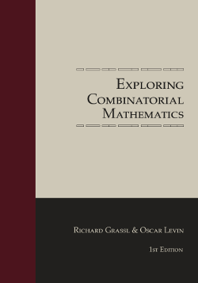

<!-- About/info -->
  <section class="section">
    <div class="container">
      <div class="columns is-variable is-8">
        <div class="column is-3 has-text-centered">
          <div class="content">
          <p></p>
            <p>
              <a class="button is-info is-outlined is-fullwidth" href="./ecm/ecm.html"><span class="icon is-small"><i class="fa fa-book"></i> </span><span>Read online</span></a>
            </p>
            <p>
              <a class="button is-info is-outlined is-fullwidth" href="./pdfs/ecm-tablet.pdf"><span class="icon is-small"><i class="fas fa-download"></i></span> <span>Download PDF</span></a>
            </p>
            <p>
              <a class="button is-info is-outlined is-fullwidth" href="https://amzn.to/2BTlcR7" target="_blank"><span class="icon is-small"><i class="fab fa-amazon"></i> </span> <span>Buy paperback</span></a>
            </p>
        </div>
      </div>
        <div class="column is-8">
          <div class="content">
            <em>Exploring Combinatorial Mathematics</em> is a free and open source textbook suitable for an upper level undergraduate or Master's level discrete math or combinatorics course, especially if the intended audience is pre-service or in-service secondary teachers.  The text borrows material from Bogart's <em><a href="http://bogart.openmathbooks.org/">Combinatorics through Guided Discovery</a></em> and Levin's <em><a href="http://discrete.openmathbooks.org/">Discrete Mathematics: an Open Introduction</a></em>, falling somewhere between these in terms of difficulty.

            <h3>Get the book</h3>

          <p>
            The entire book is available for free as an <a href="./ecm/ecm.html">interactive online ebook</a>. This should work well on
            all screen sizes, including smart phones. Hints and solutions to examples and exercises are hidden but easily revealed
            by clicking on their links. Some exercises also allow you to enter and check your work, so you can try multiple times
            without spoiling the answer.
          </p>

          <p>
            For offline use, a <a href="./pdfs/ecm-tablet.pdf">free pdf version</a>, suitable for reading on a tablet or
            computer, is available for download. This should be searchable and easy to navigate using embedded links. Hints and
            solutions (when available) can be accessed by clicking on the exercise number, and clicking on the number of the hint
            or solution will bring you back to the exercise.
          </p>
          <p>
            If you prefer a physical copy, an inexpensive print version of the text is available on <a
              href="https://amzn.to/2BTlcR7" target="_blank">Amazon</a>. This should be cheaper than printing the entire book and
            binding it yourself. Page numbers match the pdf version.
          </p>

          <!-- <h4>PreTeXt (and LaTeX) source</h4>
          <p>
            The source files for this book are available on <a href="https://github.com/oscarlevin/528book/"
              target="_blank">GitHub</a>.
          </p> -->

            <h3>About the book</h3>
          <p>
            This book was written specifically to be used as the textbook for the Master's level Discrete Mathematics course at
            the University of Northern Colorado. This course is part of a MA in Mathematics with a Teaching Emphasis. Most of the
            students in the course are current secondary math teachers. This intended audience has influenced the style and
            content of the book in a few important ways.
          </p>
          
          <p>
            First, we acknowledge that not everyone reading this book will be immediately familiar with the content of a standard
            undergraduate discrete mathematics course. Little is assumed about the reader's previous work in the subject, beyond a
            general understanding of how abstract mathematics proceeds, as well as some basic ability with mathematical proof. For
            the reader completely unfamiliar with these and the basic objects of mathematical study (sets and functions),
            background material is included in an Appendix.
          </p>
          
          <p>
            Topics have been selected to illustrate larger concepts of interest to secondary teachers. We have put an emphasis on
            understanding simple concepts deeply and in more than one way. Although some topics intersect secondary curriculum,
            most of the questions here are at a higher level. Still, the problem solving strategies and big ideas illustrated by
            our questions have applications to secondary mathematics. This emphasis is quite different than other mid level
            discrete and combinatorics textbooks, since we are not preparing our readers to begin a career in research
            mathematics.
          </p>
          
          <p>
            While this course is not a course on teaching mathematics, we have tried to model good pedagogical practice. As you
            will see, almost all of the textbook consists of <em>Activities</em> and <em>Exercises</em> that guide students to
            discover mathematics for themselves. This will require quite a bit more work both from students and instructors, but
            we strongly believe that the best way to learn mathematics is by doing mathematics. Most of all, discovering
            mathematics is fun.
          </p>


<!-- <h4>About the authors</h4>
<p>
  Richard Grassl is an emeritus professor at the University of Northern Colorado.
</p>
<p>
  <a href="http://math.oscarlevin.com/" target="_blank">Oscar Levin</a> is an associate professor at the University of Northern Colorado.  He has taught mathematics at the college level for over 10 years and received multiple teaching awards.  He received his Ph.D. in mathematical logic from the University of Connecticut in 2009.
</p> -->


<h3>License</h3>
<p>
  <em>Exploring Combinatorial Mathematics</em> is licensed under the GFDL (GNU Free Documentation License).
</p>
<p>
  Permission is granted to copy, distribute and/or modify the document under the terms of the GNU Free
  Documentation License, Version 1.3 or any later version published by the Free Software Foundation; with no Invariant
  Sections, no Front-Cover Texts, and no Back-Cover Texts. A copy of the license is included in Appendix E of the text.
</p>


            </div>
          </div>
        </div>
      </div>
    </section>


  <!-- CTA buttons: -->
  <!-- <section class="section">
    <div class="container">
      <div class="level">
        <div class="level-item has-text-centered">
          <a class="button is-link" href="./ctgd/">Read online</a>
        </div>
        <div class="level-item has-text-centered">
          <a class="button is-link" href="./pdf/bogart.pdf">Download ebook</a>
        </div>
        <div class="level-item has-text-centered">
          <a class="button is-link" href="http://amzn.to/2CvXJbh">Purchace paperback</a>
        </div>
      </div>
    </div>
  </section> -->
